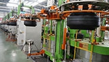

怎么看待工业机器人造就的自动化转型
2019-10-24
工业机器人广泛的采用，推动了自动化生产的实施，工业机器人不知疲倦地进行各种简单重复性工作，这有效提高了劳动生产率，降低了生产成本。工业自动化生产已经深深地融入到了各个领域，人们的生活会更加便捷。
随着电子技术的发展，机器设备越来越高级和智能化，这使得人们看到了它们的发展前景，各个领域对机器人的兴趣也越来越大。在生产制造业方面，机器人、工业自动化也在迅速发展，在过去，机器人主要应用在汽车领域，现在其它生产制造业里工业机器人已得到普及和应用。我们在广东东莞了解到，去年由东莞市经信局牵头，广东拓斯达企业作为主讲单位，在30几个镇区，重点展示了高速伺服机械手、非标自动化等方面的核心技术的生产优势，这大大推动了机器从传统生产制造业向工业自动化转型升级的步伐。

眼下越来越多的传统制造企业的生产都将由机器人渐渐替代，工业机器人会不断的普及下去，慢慢的融入到人们的日常生活。各个领域进行自动化生产，各种机械手、注塑机、冲压机、传送机等等不断出现在大家的眼前，在方便了生产的同时会让我们的生活更加舒适。
下一篇：如何推进工业自动化